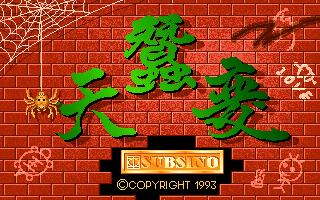
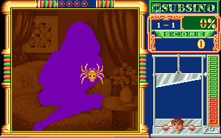

名稱：天蠶變 (中文版)
簡介：中潛1993年出品的益智遊戲，玩家須在限時內，在不被敵人碰到的情況下，畫線圍出
一定比例的區域 [待補]。


保護：圖案數字密碼，破解碼：
SILK.EXE
36 3A 42 FC 74 13 (密碼隨便輸入)
-- -- -- -- EB --
或
7E 95 5E 5D CB 55 8B EC 56 (密碼隨便輸入)
-- -- -- -- -- CB -- -- --
或
0B C0 74 03 E9 EE 00 (密碼隨便輸入)
-- -- 90 90 -- -- --
或
75 55 B8 3F (輸入2次錯誤後進入)
EB -- -- --
備註：綜整網路各版本，發現部份檔案有異，尚不清楚何者為正確。差異檔有DANCE1.TEX、
GRAY62.TEX、GRAYPIG1.TEX、GRAYPIG2.TEX。此外，執行檔DEMO.EXE位置8540h，以及
SILK.EXE位置A660h也有43h和42h的不同值（大多是42h）。
修改：SILK.EXE
1.隻數不減
55 8B EC FE 0E 25 A9
-- -- -- 90 90 90 90
2.怪物不動
7C A5 B8 01 00 EB 00
-- -- B8 00 00 -- --